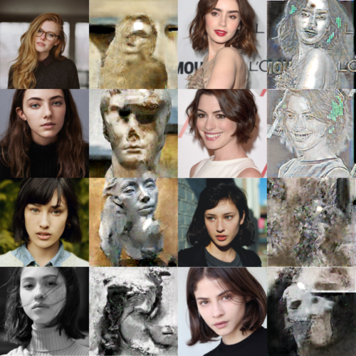
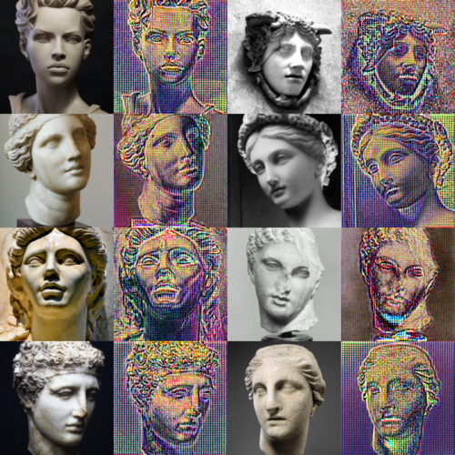

Image to Image translation
Image to image translation is part of what is known as cross-domain knowledge. The idea behind cross-domain knowledge is that there is a shared representation of an object in two domain spaces. For example, a photograph of persons face have a representation as a black and white sketch and vice versa. In this exploration I use the cyclegan model, which uses two autoencoders that translate one image from one domain to another, and two discriminators that judge whether an image was sampled from the actual domain or was generated. In this case I wanted to find a common representation between sculpture faces and actual faces. I got some interesting results from faces to sculptures, however for the translation between sculptures and faces, I was left with why I called a “vaporwave” filter.
results
 